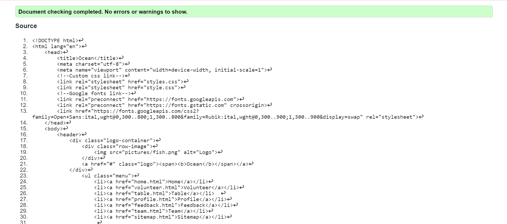
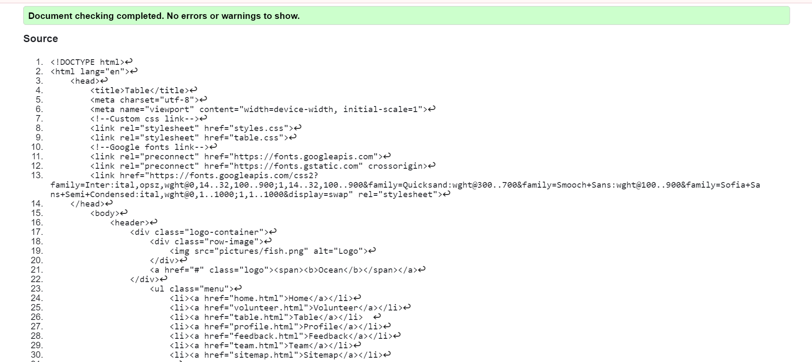
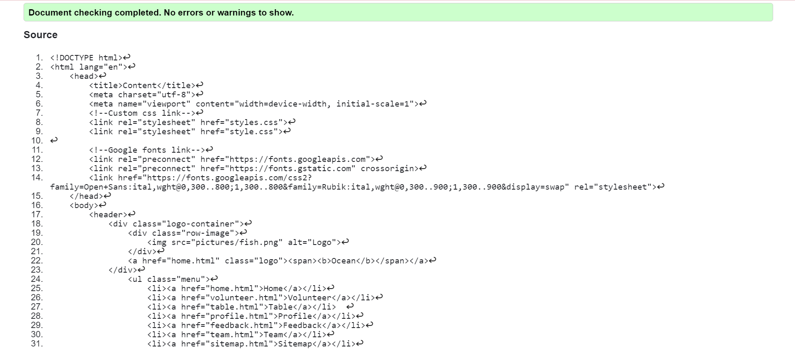

Home Page validation report
Confirms that the page is responsive.

Back to Page Editor page
Table Page validation report
Confirms that the page is validated and respnsive.

Back to Page Editor page
Content Page validation report
Confirms that the page is working accordingly.
